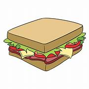
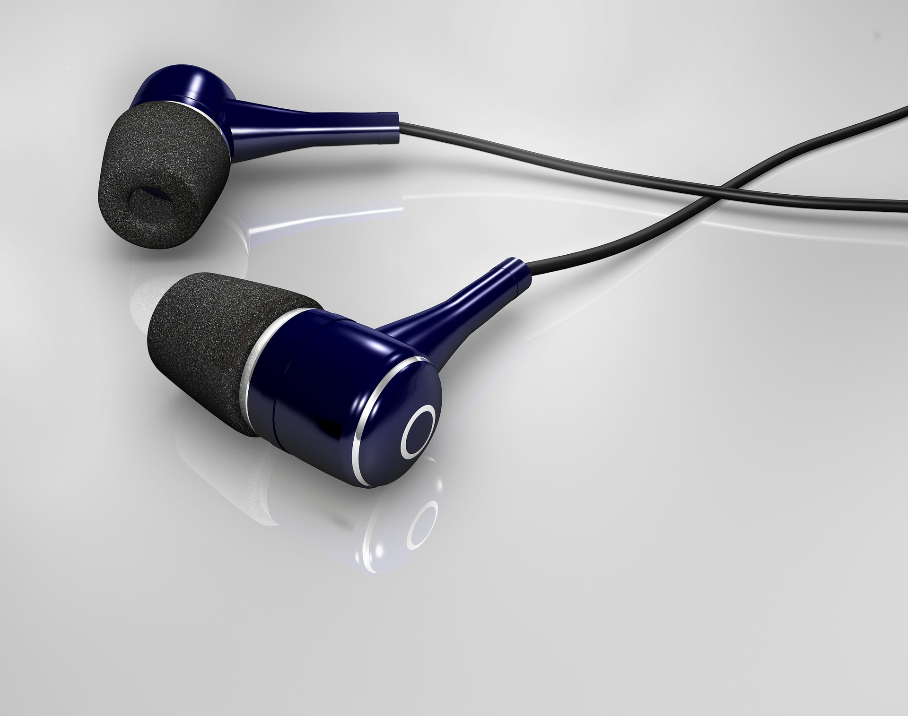
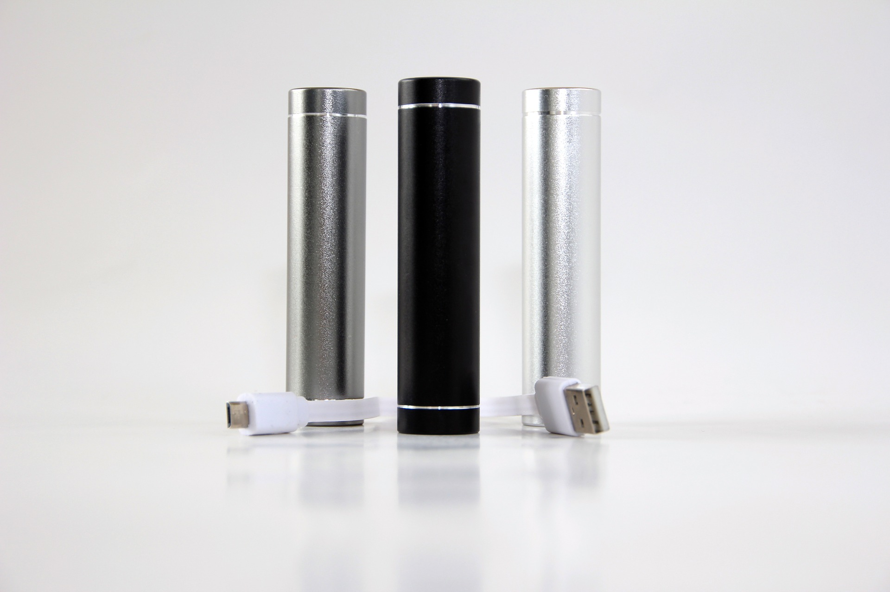

What And Why
Period Pack
If you have gotten your period before, you know the struggle of
getting it unexpectedly.
A period pack consists of a few tampons or pads or
whatever you use and a spare change of
underwear and pants. All of which should be discreetly hidden in an old pencil case.
Spare Pencil Case
 Have you ever lost your pencil case? Isn’t it a hassle and kind of awkward
Have you ever lost your pencil case? Isn’t it a hassle and kind of awkward
to keep on asking other people for stationary
because you've lost yours? That's why you should have a backup pencil case
in your locker, nothing too big just a of couple pens and
pencils, just enough so that if you lose your pencil
case you won't have to ask others.
Lunch

Lunch is because you need to have
energy though the day to
keep you going and to
keep you healthy.
Rain coat and/or Umbrella
This one is straight forward,
a raincoat or umbrella in your locker is
simply in case it rains to keep yourself
and your belongings dry.
Money
One reason you should keep money in your locker
is in case you forget or lose your lunch
so you can buy some more, or if you need to buy a bus
ticket home, or if you just decide to go to the mall after school to unwind.
Wired Head/Ear Phones
 Most people nowadays have wireless headphones, which is great because they are convenient,
but what happens if you lose them or if you have to watch a video on one of those old school
computers that can’t connect your headphones? That's why you should have wired headphones just in case.
Charger/Battery Pack
 You don't know how many times one of my friends has asked me for my charger because they forgot theirs
and their phone is about to die. You should always have a battery pack or charger on you
in case your phone is about to die or in case of an emergency it's just a smart thing to do.